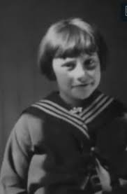
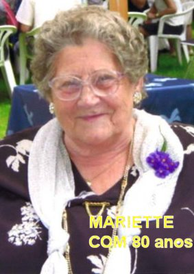
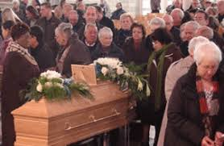
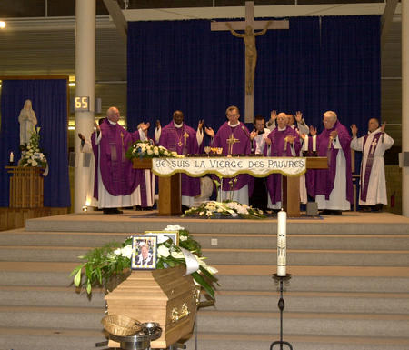
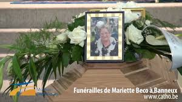

“DEPOIS DAS APARIÇÕES”
A VIDENTE E SUA FAMÍLIA
A vidente Mariette permaneceu com sua família e sempre procurou se ocultar, pois não queria ser comentada e nem evidenciada por causa das Aparições. Evitava aparecer em publico, mesmo para fazer compras, escolhia sempre os horários com menos movimento e nunca os horários de grande movimentação (horários de pico). Modestamente buscava viver os seus dias, se ocultando em todas as oportunidades. Não fazia nenhuma declaração e pedia às suas amigas que cultivassem com ela uma discrição absoluta.
Sobre as Aparições ela somente falou e explicou o assunto quando foi convocada oficialmente pelo Pároco da Igreja Matriz e nos interrogatórios Diocesanos que investigavam o acontecimento.
Durante a visita do Papa João Paulo II em 1985, os membros da comissão queriam colocá-la em destaque numa posição de realce, mas ela não aceitou e reagiu energicamente. Depois de muita insistência, só concordou em estar presente ocultamente entre os cegos. Até o ano 2000 ela acompanhou todas as grandes celebrações religiosas em Banneux, mas sempre oculta, escondida em algum local, ou no meio de um grupo religioso ou de pessoas inválidas. Utilizava todos os artifícios possíveis e imagináveis, para não ficar em evidência, realizando as suas práticas religiosas e rezando com o espírito tranquilo e concentrado nas orações.

Mas, infelizmente, na sequência dos meses, também em Aywaille começaram aparecer às visitas inoportunas: pessoas interessadas em conhecê-la, alguns pedindo a assinatura dela em imagens de NOSSA SENHORA ou em livros de orações. No início Mariette se escondia ou fugia de algum modo. Mas depois, com paciência, ela concordou. Todavia quando começou a perceber que era uma frequência incômoda, passou a recusar energicamente. As Irmãs tentavam impedir a presença daquelas pessoas impertinentes, mas nunca conseguiam com total êxito. Por essa razão, a partir do final de 1933, ela parou com os estudos em Aywaille. Ao mesmo tempo, pessoas caridosas nesta mesma época decidiram também ajudar, e não só a Mariette, mas auxiliando os seus pobres pais e irmãos, que verdadeiramente estavam vivendo com muitas dificuldades, sem trabalho, sem fonte fixa de renda, e com uma constante e perturbadora peregrinação na residência. Peregrinos honestos e fervorosos ficaram com os irmãos menores e colocaram Mariette com as Irmãs Ursulinas em Tildonk, a partir de 1934. Em 1935, ela frequentou o Instituto Marie-Thérèse em Verviers. Próximo ao final de 1935 ingressou como auxiliar de enfermagem na Clínica Sainte Rosálie, em Liège. Nessa Clínica, a Irmã Lutgarde que era a Superiora da Administração, tornou-se sua grande amiga e confidente, tendo inclusive se beneficiado de uma cura admirável, num admirável milagre, realizado por NOSSA SENHORA A VIRGEM DOS POBRES.
Em princípios de Dezembro de 1939, a família Beco se transferiu para a França por causa da Segunda Guerra Mundial. Onde eles moravam em Banneux estava próximo do Forte de Tancrémont que podia ser visado durante a guerra. Então se mudaram para a cidade de Tule na França, e Mariette foi contratada como trabalhadora em Lamarche. Mas não se sentiram devidamente acomodados e por isso, voltaram a Banneux em 1940. A mãe Luisa Wigemont estava grávida e queria dar a luz na Bélgica. Nasceu Marie-Thérèse a irmã caçula de Mariette.
Durante a guerra, Mariette
arriscou a sua vida participando da resistência aliada, era membro do grupo
chamado “Constance”
, que tinha um local de contato, atrás da 
Durante a Guerra, com a idade de 21 anos, conheceu e se casou com Mathieu Hoeberigs, embora sem a aprovação dos seus pais que tinham noticias sobre o comportamento do rapaz e não aprovaram a escolha. O rapaz já tinha certa fama que não agradava a família. Chegaram a ter filhos, mas viveram poucos anos juntos. Os conflitos conjugais se sucederam e acabou ocorrendo à separação. Há fortes indícios de que a separação se precipitou em virtude de um fato grave acontecido, que o Padre Jamin Pároco local revelou através de documento escrito: “Visitantes desconhecidos ofereceram a Mariette uma vultosa quantia para ela deixar Banneux e negar as Aparições de NOSSA SENHORA por escrito. Ela imediatamente expulsou os dois homens da sua presença. Eles então foram tentar o marido Mathieu, oferecendo-lhe o mesmo valor financeiro. O esposo gostou da idéia e estava prestes a ceder, quando Mariette viu e vigorosamente interveio, opondo-se violentamente a aquela abominável proposta, expulsando os dois homens que estavam sendo protegidos pelo seu marido”.
Com este fato se efetivou o rompimento em definitivo do casal. Mariette abriu uma Loja e foi trabalhar no comércio. Sempre estava na Igreja, rezando para JESUS no SANTÍSSIMO SACRAMENTO e diante da imagem de NOSSA SENHORA.
Com o peso dos anos teve diversos problemas de saúde que não conseguiu contornar: a redução severa da visão e da audição, além de sérios problemas de locomoção. Sua vida se restringiu a pequena Loja por um período, e normalmente se encontrava na Igreja, sozinha em orações. À noite, dormia pouco, no máximo 3 horas. Sentia-se bem em passar a noite rezando sentada na cama. Quando estava sofrendo, permanecia de pé, diante de uma imagem de NOSSA SENHORA em seu quarto; e com lágrimas nos olhos relembrava-se com saudades daquelas visitas na sua infância, ouvindo agora em seu coração o eco das palavras da MÃE DE DEUS A VIRGEM DOS POBRES: “Rezarei por você”.
Mariette faleceu no dia 2 de Dezembro de 2011, com 90 anos de idade.


